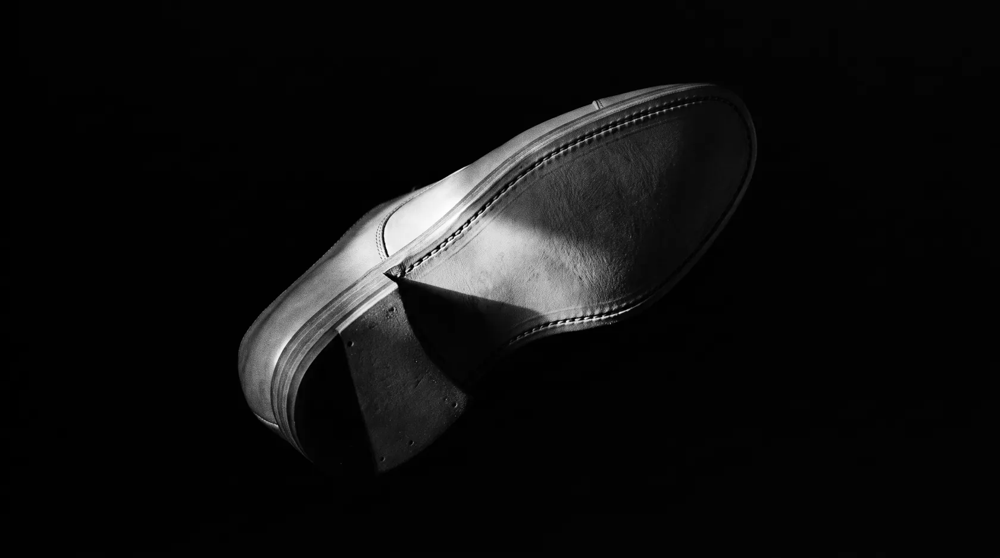
01 / 03
Professionalità
Oltre 25 anni di esperienza, arricchita ogni giorno da chi fa le scarpe da generazioni.
Ogni dettaglio della suola è fondamentale per la riuscita della calzatura.
Scopri il mio metodo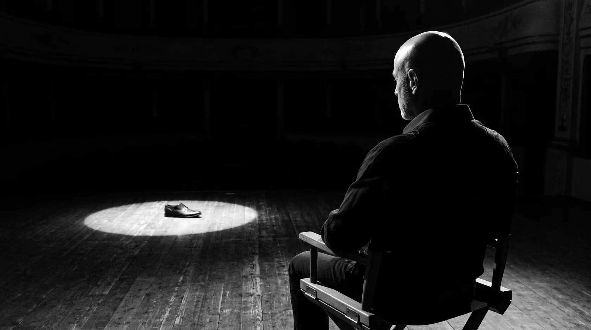
25 anni di esperienza al servizio dei brand di lusso. Design, prototipazione 3D e produzione: tutto in una regia.
Al fianco dei clienti per fare squadra.
Non è solo un modo di operare: è una filosofia.
Come tecnico-commerciale, il mio obiettivo non è fornirti un componente, ma la base solida su cui costruire e pianificare le tue strategie.
Da oltre 25 anni lavoro al fianco dei migliori tecnici dei brand del lusso, degli stilisti di calzature e dei titolari dei calzaturifici, custodi di un sapere sul fare le scarpe che va avanti da generazioni. Sono loro i miei insegnanti.

Oltre 25 anni di esperienza, arricchita ogni giorno da chi fa le scarpe da generazioni.
Ogni dettaglio della suola è fondamentale per la riuscita della calzatura.
Scopri il mio metodo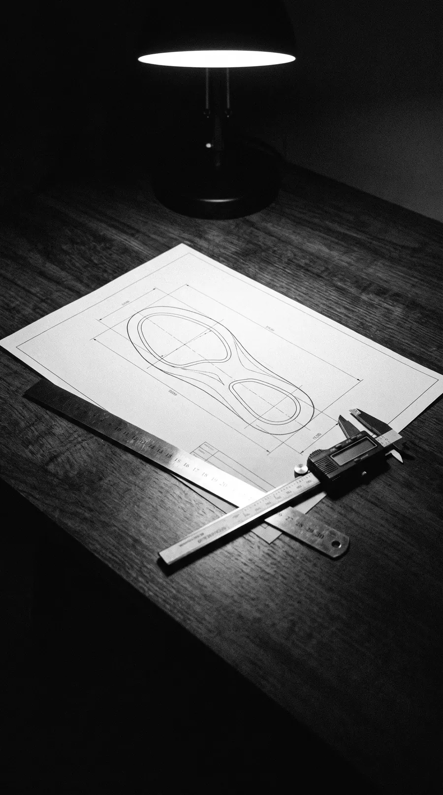
Un impegno preso è un traguardo da raggiungere: un goal da fare.
La puntualità e la cura del servizio sono il mio modo di onorare il tuo lavoro.
Scopri il mio metodo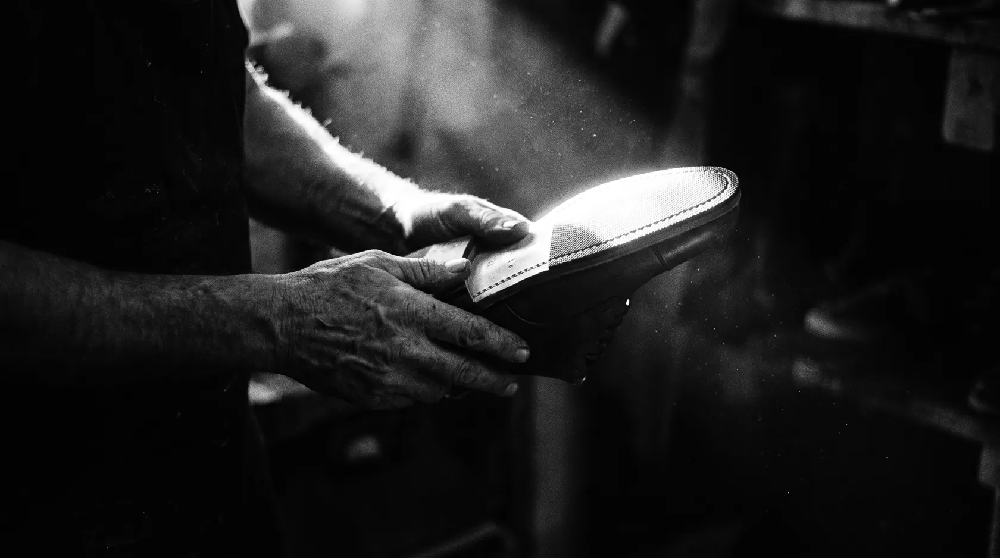
La trasparenza è il collante di ogni partnership duratura.
Meglio chiarire prima gli obiettivi, e valutare insieme metodi e mezzi per raggiungerli.
Scopri il mio metodoTocca per il prossimo faro
Gestisco per te il dialogo integrato tra lo studio creativo Top Model e le unità produttive di Del Papa e Da.Mi. Lavorando in squadra, le criticità tecniche si risolvono prima che diventino costi in produzione.
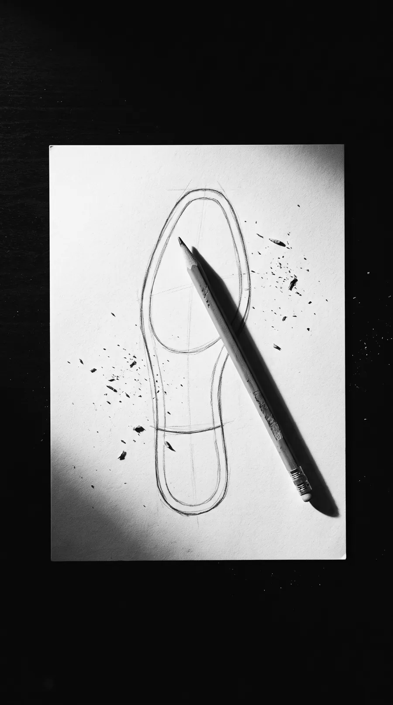
Ascolto il brand e leggo la fattibilità dentro lo stile: ogni progetto parte da qui.
Lo studio creativo e tecnico trasforma l’idea in un progetto concreto: disegno e modelleria.
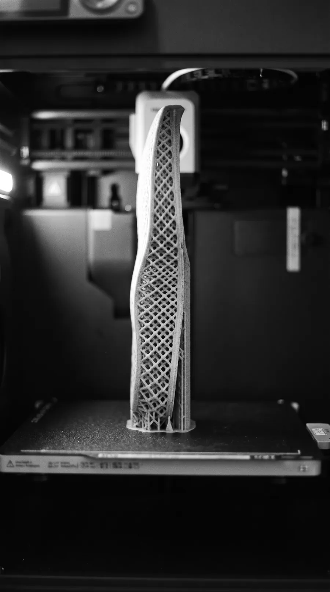
Suole e prototipi on-demand con stampanti 3D di ultima generazione, su qualsiasi taglia e colore.
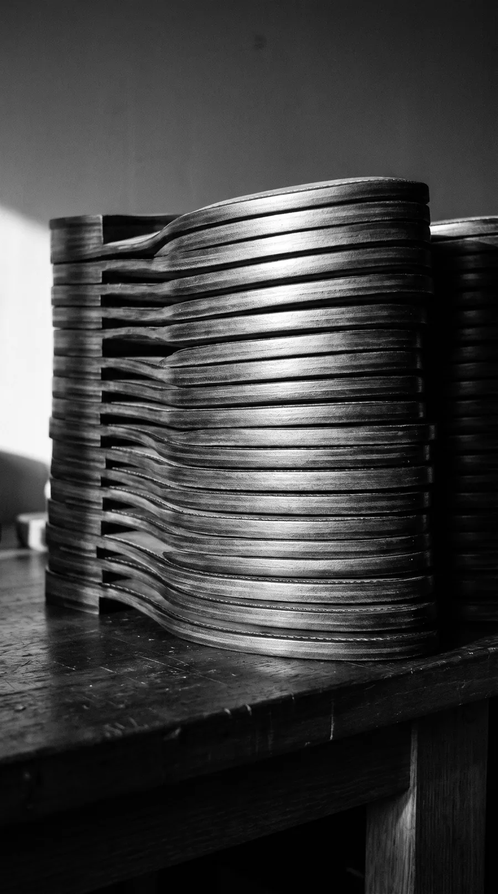
Cuoio artigianale, stampaggio TPS, TPU, EVA e il nuovo impianto E‑TPU SUPERFOAM.
Dato di filiera 2024 sulla prototipazione rapida. Le barre sono in scala sul valore medio.
Suole e prototipi on-demand dal D‑LAB, su qualsiasi taglia e colore: i tempi degli stampi si riducono drasticamente.
Richiedi informazioniCuoio lavorato come vuole il lusso, con la flessibilità e il valore dell’anima artigianale di Del Papa.
Richiedi informazioni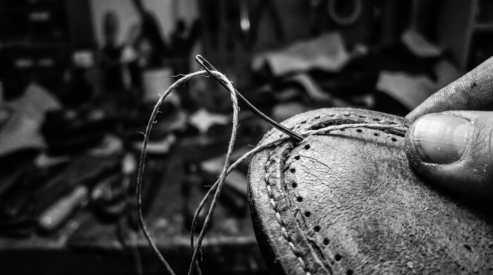
Materiali tecnici leggeri e sostenibili, dallo stampaggio interno fino al nuovo impianto E‑TPU SUPERFOAM.
Richiedi informazioni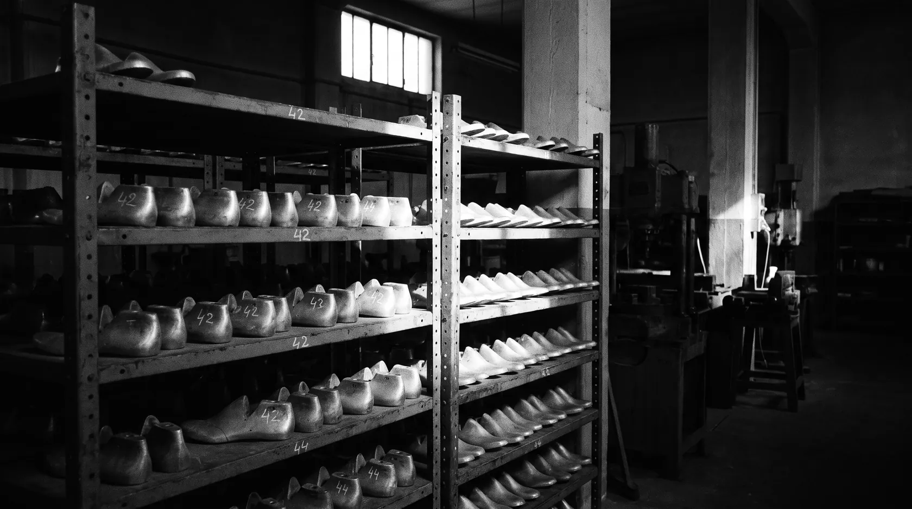
Disegno, modelleria, stampo, produzione: un ciclo integrato con una regia sola e tante competenze.
Richiedi informazioniLa visione creativa della rete NOS in una collezione pronta, per chi cerca il meglio del settore in tempi rapidi.
Design & Performance Made in ItalyRichiedi informazioni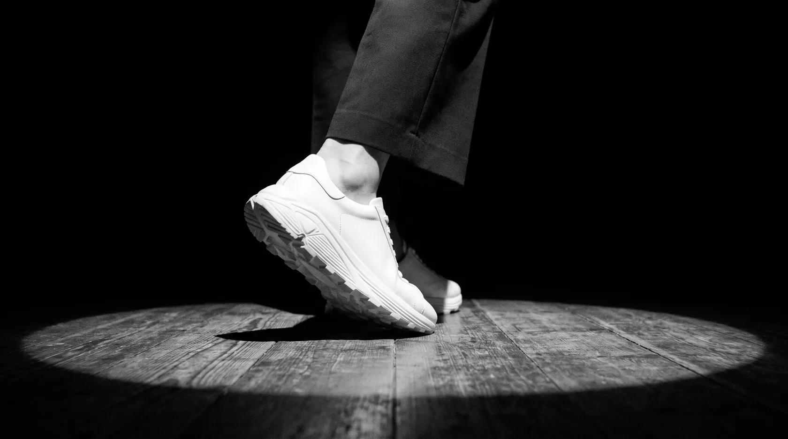
Anche nel nome c’è la parola team. Squadra, perché nessuno vince da solo. A Del Papa e Da.Mi, due pilastri della produzione di suole, si è aggiunto un terzo attore: Top Model, lo studio creativo e tecnico che trasforma le idee in progetti concreti. Il cerchio si chiude: progettazione, stile e produzione dialogano costantemente, e io trasferisco questi strumenti nelle mani dei clienti.
Lo studio che disegna le idee dei clienti.
L’azienda che seguo da più di 20 anni.
Terza generazione, prototipazione 3D.
Anima artigianale, organizzazione industriale.
Seguo questa azienda da più di 20 anni: oggi è un riferimento per la produzione di suole uomo e donna. Il partner giusto per suole in cuoio artigianali, flessibili e di grande valore.
Una lunga storia di famiglia, alla terza generazione.
Una struttura al servizio dei produttori di calzature che pretendono servizio, qualità e un prezzo studiato con il cliente, per affrontare le sfide che il mercato richiede.
Dietro queste storie ci sono volti e persone. Il nostro team: un vantaggio solo per te.
Da sinistra: Gianluca Tiberi (Top Model), Paolo Pallotta (Da.Mi), Gianluca Petrelli (Del Papa), Elisabetta Pieragostini (Da.Mi), Andrea Vittori (Top Model), Mauro Testatonda, Massimo Petrelli (Del Papa).
Gestire i progetti personalizzati dei miei clienti significa proteggere il loro capitale creativo: ogni disegno, campione o file è trattato con il massimo rigore, per garantire l’esclusività del tuo design.
Nessun nome di cliente su questo sito, nemmeno sotto forma di logo. La discrezione si dimostra, non si dichiara.
Per noi il Made in Italy non è un timbro su una suola: è la certezza che ogni passaggio produttivo avvenga nel rispetto delle leggi, delle persone e della maestria artigiana.
Garantiamo il talento delle maestranze per dare ai tuoi prodotti un’anima autentica.
Una filiera corta, radicata nelle Marche, fatta di aziende che frequento di persona, reparto per reparto: la qualità cammina di pari passo con la dignità del lavoro.
Progettazione, stile e produzione dialogano nello stesso territorio, dentro la rete NOS.
Le criticità si affrontano in squadra prima della produzione, non si scoprono dopo.
I tempi si concordano all’inizio, con chi produce davvero.
Senza dignità non c’è qualità.
I progetti dei brand restano nei loro archivi, non nel mio sito: la riservatezza viene prima della vetrina. Questa è l’eccezione che posso raccontare.
Uno stivale in esemplare unico. La storia completa, con foto, disegni e scelte tecniche, arriverà qui appena avrò l’autorizzazione definitiva a raccontarla per intero.
Vuoi un progetto su misura?Ogni quindici giorni scrivo un’opinione o un’analisi dal banco di lavoro: una suola tecnica appena nata, una suola d’archivio di vent’anni fa, le voci della filiera.
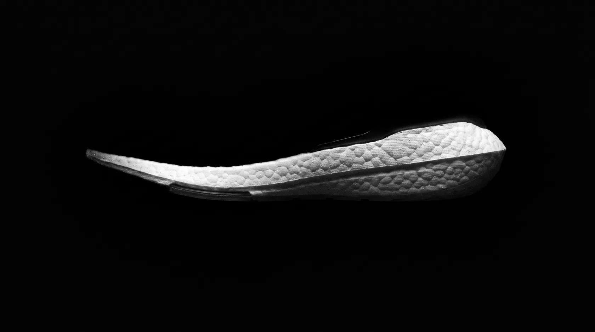
Anatomia del sapere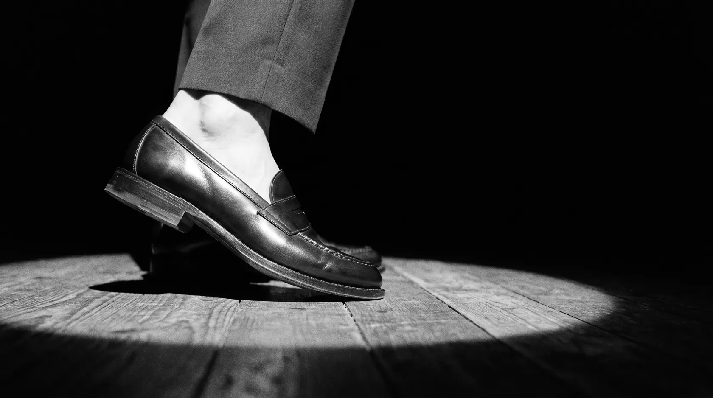
Conversazioni da filieraPrenota una visita o una consulenza tecnica: valutiamo insieme il tuo progetto. Rispondo io, non un ufficio.
Salva il mio contatto in rubrica, con un tocco.